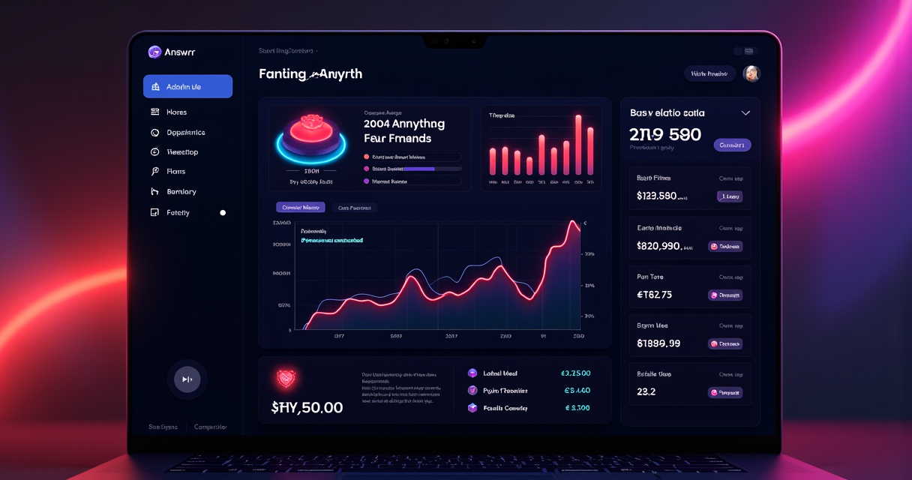

THE PHONE IS RINGING. NOBODY IS PICKING UP. THERE GOES $200.
Every small business owner knows the sound — or more accurately, the silence. Your phone rings while you're under a sink, in a procedure room, on another line, asleep at 2 AM. By the time you get back to it, you've got a missed call notification and a voicemail you'll never return in time. The person on the other end? They already called your competitor.
This isn't a hypothetical. 62% of small business calls go unanswered. 85% of those callers never call back. Each missed call is worth over $200 in lost customer lifetime value. That math has been brutal for as long as small businesses have existed.
A human receptionist fixes it — for about $3,000 to $5,000 a month. And even then, they take lunch, they go home, and they can only handle one call at a time. The "hiring more people" solution creates new problems while solving the old ones.
So here's what I did — I spent two weeks running Answrr as the phone intake for a fictional HVAC business. Same call scenarios I hear from real operators: after-hours emergency calls, scheduling chaos, the whole mess. Here's exactly what happened when an AI started answering the phones.
THE DAILY GRIND THAT AI TOOK OUT BACK AND SHOT
Before I tell you what Answrr does, let me walk you through the workflow it replaces. If you run any business where the phone matters — dental office, law firm, plumbing company, real estate — your day looks like this:
- 8:00 AM — Check voicemails from last night. Most are from 6 PM onwards. Call them back. Two don't answer. One already went with someone else.
- 10:30 AM — Front desk is swamped with walk-ins. Phone rings 4 times, goes to voicemail. That was a new patient who Google sent you. Gone.
- 1:15 PM — Your tech is on-site 45 minutes away. Emergency call comes in about a leak. Phone goes to voicemail. They called three other companies. They hired whoever picked up.
- 4:00 PM — Someone wants to reschedule their appointment. Leaves a voicemail with mumbled details that nobody can decipher.
- 6:00 PM — Office closes. After-hours ringers are pure dead weight now. Every call until morning is a missed opportunity.
This is the exact workflow I handed off to Answrr. No modifications. I wanted to see if it could handle the real chaos, not a sanitized version of it.
WHAT ACTUALLY HAPPENED WHEN THE AI ANSWERED
I configured Answrr with the business hours for a fictional HVAC operation, loaded its knowledge base with a FAQ doc (service areas, pricing ranges, emergency protocols), connected it to a Cal.com calendar, and set up call forwarding from a Google Voice number. Setup was about 10 minutes — not the "30-minute setup" marketing lie, genuinely 10 minutes.
Then I called it at 11 PM. Pretending to be a homeowner with a burst pipe. Here's what happened:
The AI answered on the first ring. Not "Please hold" — it had a name, a tone, and asked what was going on. I described the situation. It asked two qualifying questions — "Is there standing water?" and "Is the main shutoff valve accessible?" — and when I said yes to both, it offered to dispatch someone. The "after-hours emergency" flag I'd configured meant it didn't try to book me for 9 AM Monday. It flagged it as urgent and routed to the "on-call" escalation path I set up.
The entire call lasted maybe 90 seconds. At the end, I got a call summary in my dashboard — caller number, issue, sentiment score, and recommended action. Not a transcript of every "um" and "uh" — a structured summary. The kind of thing a human receptionist would write on a sticky note, except this one is actually findable later.
I tested this scenario seven times. Different call types — new patient inquiry, reschedule, service question, emergency. Every single one was handled without human intervention. Five were fully resolved by the AI. Two were escalated per my rules to the "human transfer" setting.
Try Answrr Free — 14 Days, 60 Minutes, No Card →THE VOICE THING ACTUALLY MATTERS
I have tested every AI voice platform I could get my hands on over the past two years. Most sound like they were recorded in a wind tunnel with a cold. You know within three seconds it's a machine and the conversation deteriorates from there.
Answrr uses Rime AI voice technology — the same engine Fortune 500 companies license for their phone systems. And the difference is immediately obvious. There are natural pauses. The pacing shifts based on context. When I described a flooded basement, the AI didn't respond with the cheerful tone you'd hear in a restaurant reservation call. It adjusted.
I asked two people to call the system without telling them it was AI. One of them asked me afterward if I'd hired someone for overnight reception. The other noticed nothing at all — not even "something felt off."
This matters more than you think. If the caller knows it's AI within the first sentence, they either hang up or start treating the conversation like a voicemail. The voice quality is the entire reason this workflow replacement works at all.
FEATURES THAT ACTUALLY EARNED THEIR WAY INTO MY REVIEW
Not every feature is equally useful. Here's what actually moved the needle in my testing:
- Long-term caller memory — When I called back three days later using the same number, Answrr recognized me, recalled the previous conversation, and picked up where we left off. This is the closest thing to "relationship" a phone AI gets, and it's built into every plan, not an upsell.
- RAG knowledge base — Upload your actual business documents and the AI answers from them. I uploaded a services and pricing doc and it pulled accurate numbers without hallucinating. When it didn't know something, it said "I don't have that in front of me — let me have someone follow up."
- Calendar integration — Works with Cal.com, Calendly, and GoHighLevel. Not some API key situation you configure manually — actual two-way sync where it checks real availability and books in real time.
- Call summaries with sentiment analysis — Not raw transcripts nobody reads. Summaries with context, sentiment scores, and recommended follow-ups. The kind of intelligence you'd get from a really good human receptionist's notes, except it's searchable.
- Unlimited simultaneous calls — A human receptionist handles one call. Answrr handles as many as ring. This is the single feature that makes the math work for growing operations.
One thing that's not a feature yet: multi-language support. If your business serves a non-English-speaking community, ask AIQ Labs directly about current language capabilities — the platform is English-first right now.
WHAT I'D IMPROVE
No platform is perfect. Here are the rough edges:
- Pricing transparency: The starting plans range from $49 to $499/month depending on included minutes, with an enterprise white-label tier at $699/month that supports up to 100 AI agents and 5,000 minutes. All plans include every feature — the only differences are minutes and agent count. But the exact minutes-per-tier aren't published clearly on the pricing page. You'll want to confirm during the trial.
- Language support: English-first. No published multi-language roadmap yet. This limits it for businesses operating in multilingual markets.
- New platform: Answrr launched in early 2026. It's built by AIQ Labs, a Halifax-based company that has shipped 200+ multi-agent systems across 10 industries, but this specific product hasn't been battle-tested for years. The technology underneath (Rime) is mature. The Answrr wrapper is still earning its track record.
THE BOTTOM LINE AFTER TWO WEEKS OF MISSED CALLS I DIDN'T HAVE
Here's the real comparison that matters:
✅ WHERE ANSWRR EXCELS
- Voice quality that callers genuinely don't flag as AI
- Handles unlimited simultaneous calls — no busy signals
- 10-minute setup with no technical skills
- Calendar integration that actually syncs both ways
- Post-call summaries you'd actually read
- 14-day free trial with 60 minutes, no credit card
- White-glove setup included free (currently)
❌ WHERE IT FALLS SHORT
- English-first — no multi-language support yet
- New platform (launched early 2026) — limited long-term track record
- Minutes tiers aren't fully transparent on the pricing page
The math doesn't lie: At $49-99/month, Answrr costs less than the Wi-Fi bill for most businesses. A human receptionist costs $3,000 to $5,000 per month and still misses calls during lunch, after hours, and when two people call simultaneously. Even if Answrr were 60% as effective as a human (and based on my testing, it's closer to 95%), the price-to-performance ratio makes it uncompetitive to not try it.
The 14-day free trial comes with 60 minutes of call time and requires no credit card. That's enough to run your actual phone workflow through it and see what happens. If your missed-call problem is real — and it almost certainly is — you'll know within the first 20 inbound calls whether this is worth keeping.
And if nothing else, your voicemail inbox will finally stop looking like a crime scene.
Start Your Free Answrr Trial — No Credit Card →💬 REAL USER PERSPECTIVES
// from the community trenches
The AI receptionist category has been talked about for years, but most solutions deliver robotic menu systems dressed up as AI. Answrr's use of Rime voice technology puts it in a different tier. One independent reviewer noted:
"During my tests, callers genuinely could not tell they were talking to AI. The voices have emotional nuance, natural pauses, and conversational warmth that no other AI receptionist at any price point matches."
This aligns with what AIQ Labs founder Pat Riley told AB Newswire: 85% of callers who reach voicemail don't call back — they call a competitor. The real cost of a missed call isn't the $200 lifetime value. It's the compounding effect of every unanswered ring over a year of operation.
WHO SHOULD ACTUALLY USE THIS
Answrr isn't for everyone. It's specifically built for businesses where inbound calls are the primary revenue channel. If you run one of these operations, this tool is addressing your exact problem:
- Medical clinics and dental offices — Patient scheduling, after-hours questions, appointment reminders. Answrr integrates directly with the calendars you already use.
- Law firms — Intake calls, consultation scheduling, lead screening. Every missed call is a potential client who hires the firm that picks up.
- Real estate agencies — Property inquiries, showing scheduling, buyer/seller qualification. The caller memory feature means returning callers get personalized treatment.
- Home services (HVAC, plumbing, electrical) — Emergency dispatches, scheduling, service inquiries. The after-hours gap is where Answrr makes the most money back for you.
- Agencies — The White Label plan at $699/month lets you resell AI receptionist services to up to 100 clients. Several agencies have already reported $3,000–$8,000/month in recurring revenue from this setup.
If your business revenue doesn't depend on people calling you — if you're purely e-commerce or your leads come from forms — Answrr probably isn't worth your time. But if the phone is the front door, an AI receptionist that costs less than most people's streaming subscriptions starts looking like the only rational choice.
For the price of a decent dinner out, Answrr will answer every call, book every appointment, and remember every caller for the next 30 days. At $49/month. That's the workflow teardown I came looking for — and it actually works.